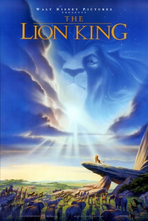
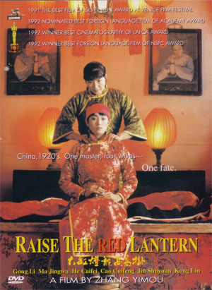
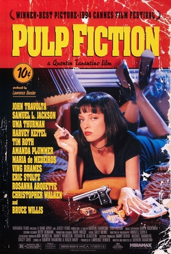
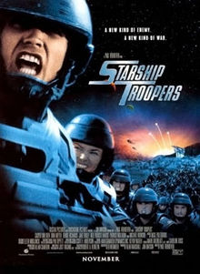

I love film. They spark many of my strongest memories and feelings.
This is a short list of films that have influenced my life and tastes.

The Lion King (1994)
Directed by: Roger Allers, Rob Minkoff
Starring: Matthew Broderick, James Earl Jones, Jeremy Irons
It's not that I watch The Lion King often. In fact, I find myself
listening to the soundtrack moreso, but I'll always have a soft
spot in my heart for this film. I remember, at 12 years old, taking
the new Metrolink to Union Station 10 Cine' with my little sister
to see it. From that moment on I consumed everything related to
this movie, from saving magazine covers and articles to owning
sheets, watches, clothes and housewares Lion King related. Little
did I know another another film opened that month that would change
my viewing habits forever, but in that's for later. The Lion King
will always be one ofmy favorites.
Was the 2nd highest grossing film of 1994 and at
one time, the highest grossing film ever.

Raise the Red Lantern (1991)
Directed by: Zhang Yimou Starring: Gong Li
I was pretty young when I saw Raise the Red Lantern for the first
time. In fact, I remember watching it with my mom on Starz or Encore on
a lazy afternoon. It was my earliest exposure to a foreign culture and
sparked an interest in Chinese history, but more importantly, exposed me
subtitles which opens up a wide swath of films. Raise the Red Lantern
was an early film of both director, Zhang Yimou (House of Flying
Daggers, Hero) and actress, Gong Li (Farewell My Concubine, 2046).
Nominated for Best Foreign Language Film at the 1992 Academy Awards.
It lost to Mediterraneo (1991)
from Italy.

Pulp Fiction (1994)
Directed by: Quentin Tarantino Starring: John Travolta,
Samuel L. Jackson, Uma Thurman, Harvey Keitel
If there is one film that exhibits a shift in my movie viewing habits,
it is Pulp Fiction. Pulp Fiction was released on 14 October 1994. I remember
nothing about its advertising campaign or that it was a critical darling.
I watched Quentin win his Best Original Screenplay Academy Award with no
excitement of feelings, but when I saw Pulp Fiction on HBO the following
summer everything changed. I'd never experienced anything like the high style,
nonlinear storyline and dialouge in this film. It raised the bar.
Selected for preservation in the United States National Film
Registry by the Library of Congress in 2013.
On The Waterfront (1954)
Directed by: Elia Kazan
Starring: Marlon Brando, Eva Marie Saint, Karl Malden
Most of us watch old movies on television, but if you ever get
chance to see one on the big screen you should take the oppurtunity.
On the Waterfront is not flashy, but is made for the big screen which
magnifies the impact of Marlon Brando's performance. This performance
changed acting forever and once you've seen it, will change your
definition of "good acting" forever.
Won 8 Academy Awards in 1955, including Best Actor for Marlon Brando.

Starship Troopers (1997)
Directed by: Paul Verhoeven
Starring: Casper Van Dien, Denise Richards, Neil Patrick Harris
Starship Troopers is a pure "cult favorite". I'm not sure if it's even
good, but I love it. For me, it's the kind of movie I watch
whenever it comes on. It looks like a Syfy original movie and based so
loosely on the book of the same name, producers had the license the title.
Director Paul Verhoeven said the film was made to satirize facism.
If he says so.